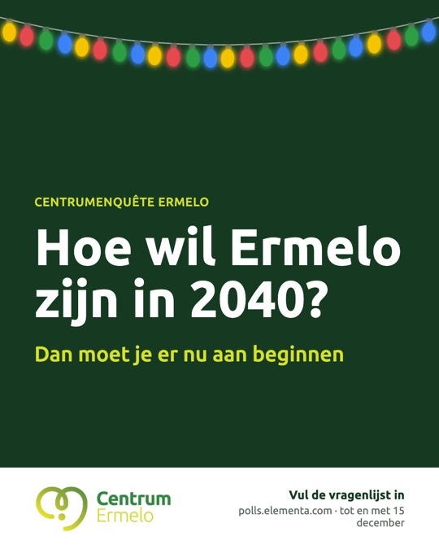

Post 1. Hoe wil Ermelo zijn in 2040?
Hoe wil Ermelo zijn in 2040? Om dat te weten vragen we u wat u er nu van vindt. Ondernemers willen graag weten wat u van het centrum vindt. Vult u de vragenlijst ook in? Dat kan tot en met 15 december. Uw naam en e-mailadres worden niet gevraagd.